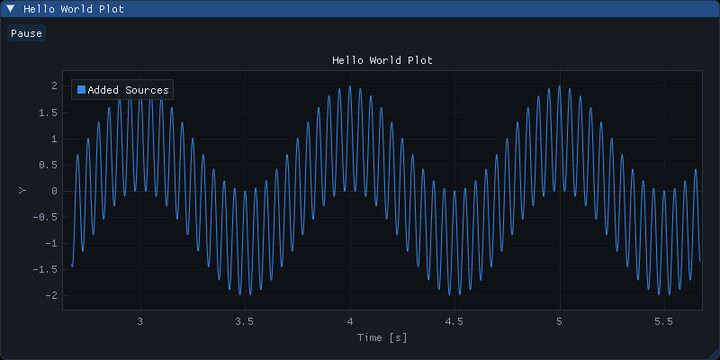
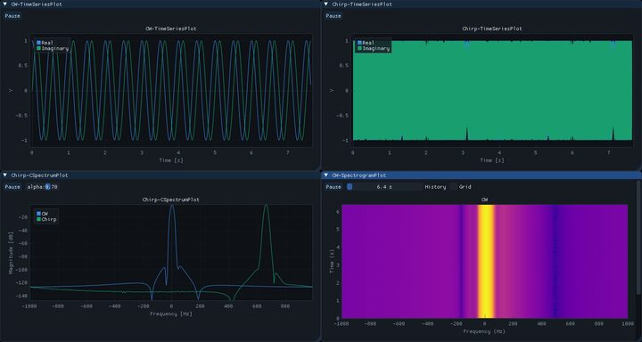
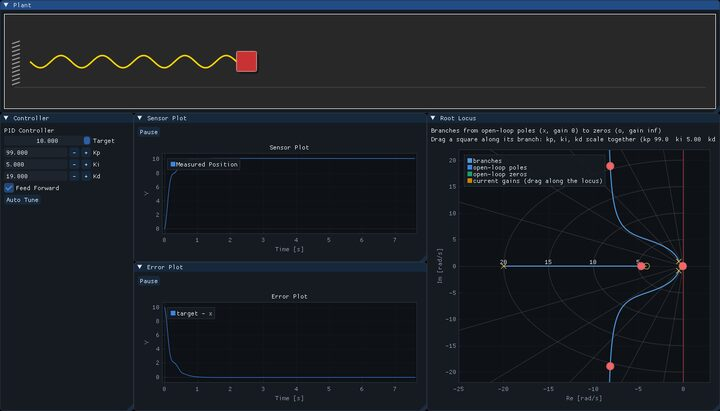
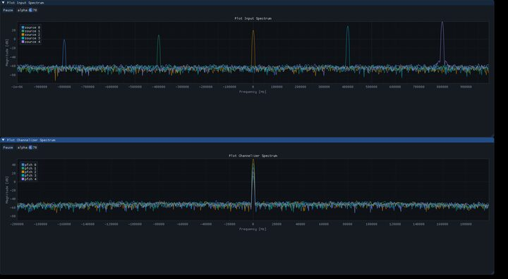
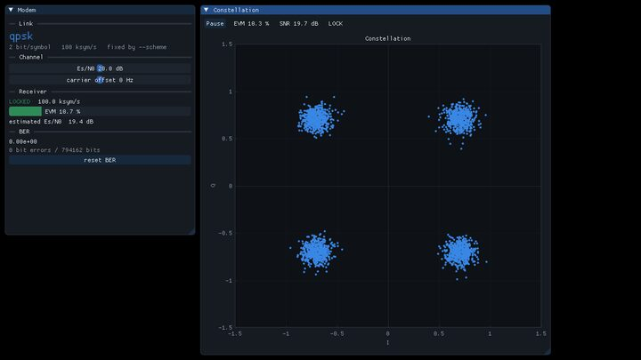
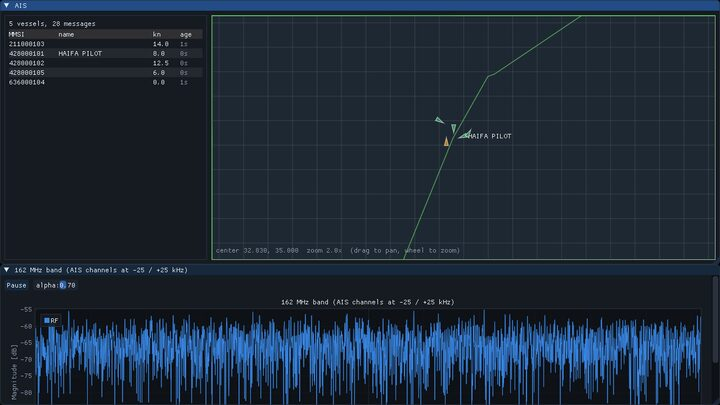

hello world
Two CW sources, an adder and a time-series plot — the smallest flowgraph cler runs.
Run in browser →
plots
CW and chirp sources feeding every plot block: time series, complex spectrum, spectrogram.
Run in browser →
mass spring damper
A PID control loop around a simulated plant, with live gains and a draggable root locus.
Run in browser →
polyphase channelizer
Five tones in a 2 MHz band split into channels by one polyphase filter bank.
Run in browser →
modem loopback
PRBS symbols through QPSK, AWGN and a carrier offset, demodulated live — drag the sliders and watch EVM and BER move.
Run in browser →
AIS receiver
Both AIS channels demodulated out of one 2.4 MS/s stream onto a live ship map. In the browser the stream comes from the built-in simulator instead of a HackRF.
Run in browser →